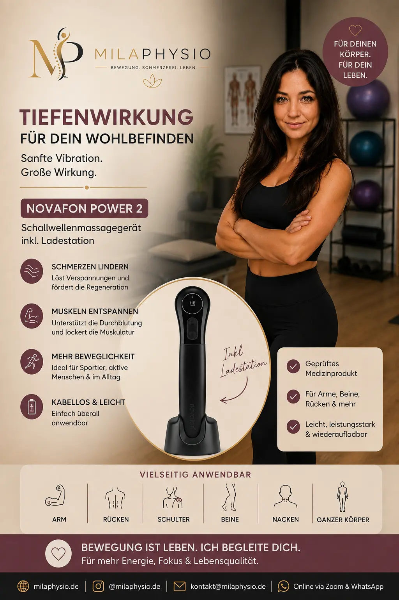

NOVAFON power 2
Ein Gerät für lokale Vibrationstherapie, das mit unterschiedlichen Frequenzen und Intensitätsstufen eingesetzt werden kann.
Bei Amazon kaufenMeine Einschätzung als Physiotherapeutin
Das NOVAFON power 2 arbeitet mit lokaler Vibrationstherapie. Dabei werden mechanische Vibrationen über einen Aufsatz auf das Gewebe übertragen.
Was ich an diesem Gerät interessant finde, ist die Möglichkeit, die Behandlung über unterschiedliche Frequenzen und Intensitäten an die jeweilige Körperregion und Situation anzupassen.
Das Gerät kann insbesondere bei muskulären Verspannungen, bestimmten Schmerzen und zur Unterstützung von Bewegung und Funktion interessant sein.
Für mich ist es jedoch vor allem ein ergänzendes Werkzeug. Es ersetzt keine physiotherapeutische Befundaufnahme und behandelt nicht automatisch die Ursache eines Problems.
Für welche Beschwerden kann es interessant sein?
NOVAFON nennt verschiedene Anwendungsbereiche, darunter Schmerzen, Verspannungen, Sportverletzungen, Narben, CMD, Arthrose und bestimmte neurologische Krankheitsbilder. :contentReference[oaicite:1]{index=1}
Muskelverspannungen
Lokale Vibration kann als ergänzende Maßnahme zur Behandlung verspannter Muskulatur eingesetzt werden.
Schmerzen
Die lokale Vibrationstherapie kann bei geeigneten Beschwerden zur Unterstützung der Schmerzlinderung eingesetzt werden.
Sport & Regeneration
Das Gerät kann auch im Bereich Sport, Muskelentspannung und Regeneration interessant sein.
Bewegungsapparat
Eine mögliche Ergänzung bei ausgewählten Beschwerden des Bewegungsapparates.
CMD
NOVAFON beschreibt auch Anwendungen im Bereich der craniomandibulären Dysfunktion.
Beweglichkeit
Die Behandlung kann je nach Situation unterstützend eingesetzt werden, um Bewegung und Funktion zu fördern.
Wann würde ich das NOVAFON empfehlen?
Ich würde ein solches Gerät vor allem dann interessant finden, wenn bereits klar ist, welche Struktur oder Funktion behandelt werden soll.
Besonders interessant für
- muskuläre Verspannungen
- ausgewählte Schmerzprobleme
- ergänzende physiotherapeutische Behandlung
- Sport und Regeneration
- bestimmte funktionelle Beschwerden
Vor der Anwendung beachten
- Bei unklaren Schmerzen zuerst die Ursache abklären.
- Die Anwendung sollte entsprechend der Herstellerangaben erfolgen.
- Bei bestimmten Erkrankungen ist die Anwendung nicht zulässig.
- Bei Unsicherheit vorher ärztlich oder therapeutisch abklären.
Vorteile und mögliche Grenzen
Vorteile
- Unterschiedliche Frequenzen
- Mehrere Intensitätsstufen
- Für verschiedene Körperregionen geeignet
- Kann als Ergänzung eingesetzt werden
- Auch für die Anwendung zu Hause konzipiert
Mögliche Grenzen
- Ersetzt keine individuelle Untersuchung.
- Nicht für jede Beschwerde geeignet.
- Die richtige Anwendung muss gelernt werden.
- Kontraindikationen müssen beachtet werden.
Was bietet das NOVAFON power 2?
Das NOVAFON power 2 verfügt laut Hersteller über die Frequenzen 50 Hz, 75 Hz und 100 Hz sowie unterschiedliche Intensitätsstufen.
Das Gerät besitzt außerdem einen Lithium-Ionen-Akku und kann über die entsprechende Anwendung individuell eingestellt werden. :contentReference[oaicite:2]{index=2}
Je nach Aufsatz kann die Anwendung an unterschiedliche Behandlungsziele angepasst werden.
Wichtige Sicherheitshinweise
Laut Hersteller ist die Anwendung unter anderem bei offenen Wunden oder Ekzemen im behandelten Bereich, Thrombosen, bestimmten Herzproblemen, Herzschrittmachern, Tumoren, Schwangerschaft und bestimmten akuten Entzündungen nicht zulässig. :contentReference[oaicite:3]{index=3}
Bei Schmerzen oder Schwellungen unbekannter Ursache sollte die Ursache zunächst medizinisch abgeklärt werden. :contentReference[oaicite:4]{index=4}
Wichtig
Bitte lesen Sie vor der Anwendung die aktuelle Gebrauchsanweisung des Herstellers und beachten Sie die dort genannten Kontraindikationen.
Mein Fazit
Das NOVAFON power 2 ist für mich ein interessantes Gerät für die lokale Vibrationstherapie und kann eine sinnvolle Ergänzung zu bestimmten physiotherapeutischen Maßnahmen sein.
Besonders die verschiedenen Frequenzen und Intensitätsstufen ermöglichen eine individuellere Anwendung als bei sehr einfachen Vibrationsgeräten.
Trotzdem gilt: Das Gerät sollte gezielt eingesetzt werden und nicht als Ersatz für eine individuelle physiotherapeutische oder ärztliche Behandlung verstanden werden.
Hinweis: Diese Seite enthält Affiliate-Links. Wenn Sie über einen solchen Link einkaufen, kann ich eine Provision erhalten. Für Sie entstehen dadurch keine zusätzlichen Kosten. Meine Empfehlungen basieren auf meiner persönlichen Einschätzung und ersetzen keine individuelle medizinische Beratung.